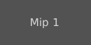

MCPE纹理图集生成器
本工具专门为Minecraft携带版(MCPE)资源包开发者设计，用于自动化生成纹理图集(terrain-atlas.tga)及相关文件。支持生成terrain.meta文件、纹理图集PNG/TGA格式，以及多级Mipmap纹理。
解决Minecraft PE 0.15之前资源包开发中的核心难题：
- 将Java版分散的纹理文件转换为PE版所需的纹理图集
- 自动生成正确的terrain.meta配置文件
- 生成多级Mipmap纹理，提升游戏性能
- 避免手动拼接纹理图集的时间消耗和错误
1. 调整terrain.meta
下载terrain2.meta
2. 生成纹理图集
下载默认映射文件（JE1.20.1到PE0.14.3）
下载纹理图集 (PNG) 下载纹理图集 (TGA)
3. 生成 Mipmap
| 级别 | 预览 | 分辨率 | PNG下载 | TGA下载 |
|---|---|---|---|---|
| 0 | 50% | 无 | 无 | |
| 1 |  |
25% | 无 | 无 |
| 2 | 12.5% | 无 | 无 | |
| 3 | 6.25% | 无 | 无 |
使用方式
完整工作流程
-
准备纹理文件
- 收集所有需要使用的单个纹理图片文件（注意限制说明中的不支持类型）
- 建议使用Java版1.20.1资源包作为参考
- 准备纹理映射文件（.txt格式，定义方块名称与纹理文件的对应关系）
-
Android平台打包步骤（使用MT管理器）
- 打开MT管理器，找到存放纹理文件的文件夹
- 左右滑动任意文件打开多选模式，点击底部菜单栏全选按钮（第一个）
- 长按任意文件选择压缩
- 设置压缩包名称为"textures.zip"
- 选择ZIP格式（不要使用RAR或7z格式）
- 压缩级别选择"存储"或"不压缩"以加快处理速度
- 点击确定开始压缩，完成后即可上传到本工具
-
生成纹理图集
- 上传纹理ZIP文件
- 上传纹理映射文件
- 设置输出图集的尺寸（推荐512x256）
- 点击"生成纹理图集"按钮，预览并下载PNG或TGA格式的图集
- 注意：水、岩浆等特殊方块可能无法正确转换
-
生成Mipmap
- 上传生成的纹理图集
- 设置需要的Mipmap级别数量（必须为4级）
- 点击"生成Mipmap"按钮，系统会自动生成各级缩小版本的纹理
- 分别下载各级Mipmap的TGA文件
- 注意：目前仅支持16x纹理在512x256分辨率下的Mipmap
-
应用到资源包
- 将纹理图集文件重命名为terrain_texture.tga
- 将文件放入MCPE资源包的images目录
- 将Mipmap文件按级别命名并放入相应目录
- 测试资源包在游戏中的显示效果
虽然本工具在64x纹理生成方面取得突破，但仍存在以下技术难题：
- 水和岩浆纹理映射问题
- 解析动态纹理
- 64x纹理加载性能
如果您知道如何解决水和岩浆纹理转换问题，或者有其他改进建议，欢迎联系我：wusheng233@qq.com
TODO: 物品纹理转换
成功案例
developer_mode
工具开发者: wusheng233
MCPE改包技术先驱
"让Java版资源包在MCPE上焕发新生：个人使用的便捷转换方案"
- 极速转换：手动转换需要数小时，现在仅需几秒钟自动完成
- 体验共享：将Java版丰富的纹理资源带到MCPE，改善个人游戏体验
- 无缝适配：转换后的纹理能良好适配MCPE引擎，正常显示使用
- 简化流程：复杂的技术流程简化为几个简单步骤，轻松使用
转换速度提高95%
android
ixe
游戏玩家
"上面那个图片直接替换？"
节省数小时
Java版资源包参考（1.20.1）
如果您使用Java版1.20.1资源包作为纹理来源，以下是要注意的路径：
主要纹理路径：
assets/minecraft/textures/block/- 所有方块纹理
注意：Java版使用独立的纹理文件，而PE版0.15之前使用纹理图集。您需要将Java版的单个纹理文件 通过本工具打包成PE版可用的纹理图集。
注意事项
- 确保所有纹理文件的命名与映射文件中的定义一致
- 调整terrain.meta文件是可选的 - 大多数情况下不需要重新生成
技术信息
- 原始项目：基于 wusheng233github/My-Messy-Scripts 中的PHP工具
- 移植环境：使用DeepSeek AI协助将PHP代码移植到浏览器JavaScript环境
- 文件格式：支持PNG和TGA（带Alpha通道）输出
- 依赖库：使用JSZip处理压缩包，TGA.js处理TGA格式